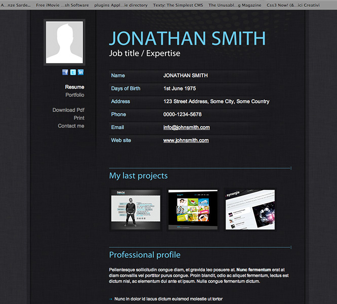
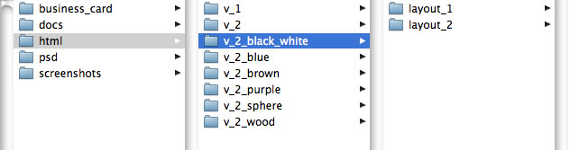
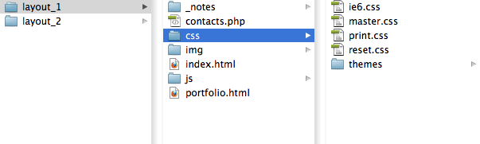
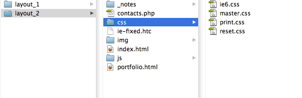
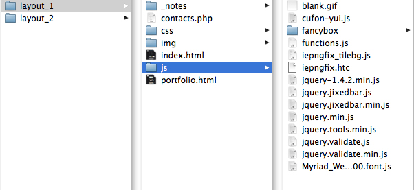
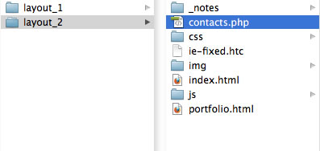
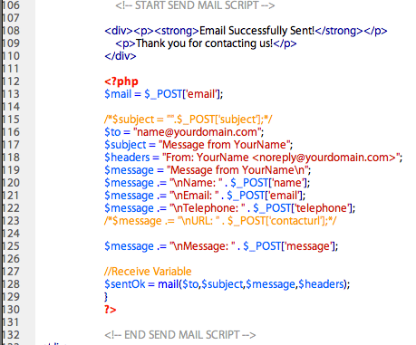
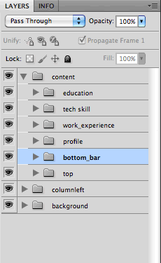

Thank you for purchasing my theme. If you have any questions that are beyond the scope of this help file, please feel free to email via my user page contact form here. If you are happy with the theme, please TAKE A MOMENT TO RATE IT on the ThemeForest website.
Thanks so much!
Ansonika - Michele Motta
1) HTML Structure
This theme is a fixed-width design with 2 different layout: the first with a bottom fixed bar (layout_1 folder), the second with the left blue column fixed on top (layout_2 folder).
Both layouts are tested on IE6.
LAYOUT 1 - with bottom bar fixed

LAYOUT 2 - with column left fixed

Both type of layout have 7 different color schemes / themes (plus the old version v_1) as you can see inside the html folder. Chose the theme you prefer and then modify the content.

Go To Table of Contents
2) CSS Files and Structure
Layout 1
Here you can find all the css you need except for jquery.fancybox_functions.css (image viewer) that you
can find here
(inside
js/fancybox/).

- ie6.css - used to fix some layout bugs.
- master.css - contains all divs which construct the layout prototype.
- reset.css - is a generic reset file. Many browser interpret the default behavior of html elements differently. By using a general reset CSS file, we can work round this.
- print.css - contains all of the specific stylings for printer.
- themes folder - contain only the styles of the bottom fixed bar.
Layout 2 - the same file structure except for the unecessary theme folder of the bottom fixed bar

If you would like to edit a specific section of the site, simply find the appropriate label in the CSS file (master.css), and then scroll down until you find the appropriate style that needs to be edited. Any css files is separated into sections using:
/* STRUCTURE ================================================================================= */
css code
/* column left ================================================================================= */
css code
/* personal details ================================================================================= */*/
css code
/* other---------------------------------------------------------- */
css code
etc...
Go To Table of Contents
3) JavaScript Files and Structure (include the solution for fixed css property in IE 6)
Layout 1

- jquery.min.js - a Javascript Library that greatly reduces the amount of code that you must write.
- iepngfix_tilebg.js, iepngfix.htc - to fix transparent png for IE 6.
- cufon-yui.js, Myriad_Web_Pro_400.font.js - Cufon font replace (Fon used: Myriad Pro).
- fancybox folder- contains all of the specific functions for the image viewer.
- jquery.validate.js, jquery.validate.min.js - contains all of the specific functions for the form validation.
- functions.js - contains some specific functions for the image viewer.
- jquery.jixedbar.js, jquery.jixedbar.min.js - contains some specific functions for the bottom bar (only for layout 1).
Layout 2 - the file structure it's the same if layout 1 except for the unecessary fixed bar files. ATTENTION TO the file ie-fixed.htc in the main root. It contain all the functions to take a solution to the css fixed property in IE6.....give a look also at ie6.css in css folder.

Go To Table of Contents
4) Customize the Template
Chose the theme you prefer and thena modify each page.
a) Change any the text
Find any line starting with the following comment and edit the text as you need:
< !--start personal details-- >
b) Edit the bottom bar
Find any line starting with the following comment :
< !-- start bottom bar -- >
b) Edit the SKILLS ORANGE BAR
Find the line starting with the following comment :
< !--start TECHNICAL SKILL BLOCK -- >
Then edit this line
<li><span>HTML/XHTML </span><em><span style="width:70px"></span></em></li>
where 85px it's equal to 100% .
Go To Table of Contents
5) Contact Page (PHP Code Explanation)
The template uses 1 PHP file,
contact.php. This file contains the Contact Form and the functions to send the email. The the part you are interested in is the following:

Go To Table of Contents
6) PSD Files
I've included the
3 complete layered psd: one is for black and white variation, other_styles.psd is for the other color schemes and cv_details_page.psd
(here you find some nice icons used in detail project page). If you'd like to change the some graphic stuff, open the psd, find the correct layer group, make the necessary adjustments, and then save the file using the command 'Save for Web & Devices'. The background styles are inside the layer group named BACKGROUND.

Go To Table of Contents
7) Theme Support
Please attach snapshots and site url and any other kind of information so I can provide a full feedback. The emails are checked one time a day, Monday to Friday. You will receive an answer within 24-48 hours (working days).
Please, send an email to info@ansonika.com with subject [ThemeForest Support] Template name
Go To Table of Contents
8) Sources and Credits
Any other media (pictures, video, audio, etc..) has been downloaded with free license or created by the author himself.
Go To Table of Contents
9) Improvements in version 2
- Added 6 color schemes / themes
- Fixed background for IE6 in layout 2
- Fancybox IE8 bug fixed in layout 1
- Added a detailed page for each single project
- Some CSS improvements
- Some print CSS improvements
I you have to upgrade from the previous version, don't esitate to contact me .... I'll help you so you don't spend too much time.
Version 1 files is included.
Go To Table of Contents
10) Bonus files
Inlcuded with this Template I give you a businnes card for free. It's composed by 6 themes (6 differerent layered PSD), with colors and graphics taken from the CV so you can use toghether with it. It's print ready 300 dpi CMYK 3,5x2 inches with bleed and guides. For a full detailed documentation click here.
Go To Table of Contents